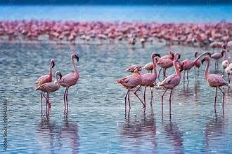

Haleji Lake
The largest bird sanctuary of Pakistan, a paradise for migratory birds.
The largest bird sanctuary of Pakistan, a paradise for migratory birds.
Haleji Lake is a freshwater lake located in Thatta District, Sindh, about 70 kilometers from Karachi. It is considered the largest bird sanctuary in Pakistan and one of Asia’s most important wintering sites for migratory waterfowl.
The lake provides a peaceful environment surrounded by wetlands, making it a vital ecosystem for wildlife, especially migratory birds arriving from Siberia and Central Asia during the winter season.
Haleji Lake hosts over 200 species of birds, including ducks, herons, flamingos, wigeons, and cormorants. It is a prime destination for bird watchers, researchers, and nature lovers.
Apart from birdlife, the lake and its surrounding wetlands also support fish, reptiles, and marsh vegetation, making it an ecotourism hotspot in Sindh.